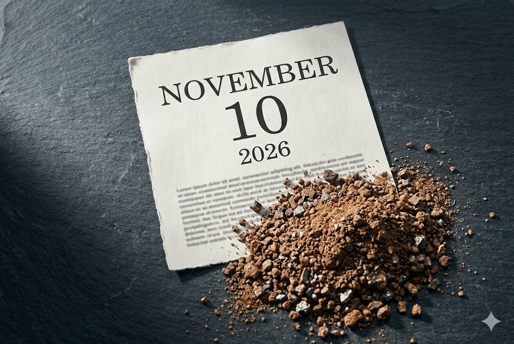

The Trump-Xi summit in Beijing on May 14-15 was supposed to trade chips for rare earths. Washington would ease restrictions on advanced AI accelerators heading to China. Beijing would open the licensing gate on the rare earths and functional materials that feed every semiconductor fab on the planet. Two interlocking grips, mutually released.
No deal.
On May 15, the US Trade Representative sat down with Bloomberg Television. Asked whether semiconductor export controls had come up during the summit that had just concluded, Jamieson Greer answered without hedging: “This was not a major topic of discussion at the bilateral meeting. We did not talk about chip export controls at the meeting.”[1]
One side of the trade is denied at the principal level.
Last week, this newsletter previewed the summit with three specific tests.[2]
An exemption from China’s case-by-case licensing for the rare earths used in advanced AI chips (sub-14-nanometer logic, 256-layer memory).
A Chinese commitment to replace case-by-case review with blanket export approvals for the functional materials flowing through every semiconductor fab: polishing slurries, sputtering targets, and non-military magnets.
A mutual rollback of the October 2025 rule under which Beijing can require an export license for any foreign-made product anywhere in the world that contains more than 0.1% Chinese-origin rare earth content.
Three tests. Three strikes. The dependency the trailer described — rare earths as the layer beneath chips, cloud, and models — survived the summit intact.
The two readouts
The White House Fact Sheet of May 17 announced that China would “address U.S. concerns regarding supply chain shortages related to rare earths and other critical minerals, including yttrium, scandium, neodymium, and indium,” and would “address U.S. concerns regarding prohibitions or restrictions on the sale of rare earth production and processing equipment and technologies.”[3] The verbs are “address” and “concerns.” That is the language of diplomatic intention. It is not the language of a regulatory commitment.
The Chinese readouts said nothing about rare earths.
Xi Jinping’s statement, issued by the Ministry of Foreign Affairs on May 14, covered “strategic stability,” agricultural trade, and Taiwan.[4] The MOFCOM follow-up on May 17 discussed tariff reductions and announced two new bilateral bodies: a US-China Board of Trade and a US-China Board of Investment.[5] CNBC noted the gap on May 18: “The Chinese statement also did not mention rare earths, while the U.S. said China would address rare earth shortages.”[6]
This is a pattern, not an accident. At Busan in October 2025, the White House announced that China had committed to “issue general licenses valid for exports of rare earths, gallium, germanium, antimony, and graphite for the benefit of U.S. end users and their suppliers around the world.” Beijing never confirmed that framing in writing. The gate has stayed narrow. The EU Chamber of Commerce in China reported that MOFCOM approved fewer than 15% of rare-earth license applications submitted by EU firms in 2025, leading to seven production stoppages in August and 46 expected in September.[7] As of December 2025, three Chinese exporters held streamlined general licenses: JL Mag Rare Earth, Ningbo Yunsheng, and Beijing Zhong Ke San Huan.[8]
When one side announces a concession that the other side does not acknowledge, the announcement is not a commitment. It is a press release on one side and regulatory silence on the other.
Beijing has now declined twice, at Busan and at Beijing, to confirm in writing the rare-earth language the White House has put out. The licensing gate has stayed closed throughout.
Chips off the table
The first two tests required leader-level negotiated outcomes on chip-specific carveouts.
Test 1: an exemption from MOFCOM’s case-by-case licensing for the rare earths used in advanced AI chips.
Test 2: a Chinese commitment to replace case-by-case review with blanket export approvals for functional semiconductor materials.
Greer’s answer closes the path by which either could have happened. If chip export controls were not discussed at the leader level, no carveout for sub-14-nanometer chips was negotiated. No blanket-approval commitment was extracted. The “address U.S. concerns” language in the fact sheet is an aspiration. The rules in force are still MOFCOM Notice 61 of October 9, 2025, with the case-by-case review for sub-14-nanometer logic and 256-layer memory currently sleeping under Notice 70.[9] Neither was rescinded. Neither was modified. Neither was discussed.
Jensen Huang said the quiet part out loud at a Citadel Securities event two weeks before the summit: “In China, we have now dropped to zero. Conceding an entire market the size of China probably does not make a lot of strategic sense, so I think that has already largely backfired.”[10] The remark concerned the H200, the AI accelerator Nvidia is licensed by the US to ship to roughly ten approved Chinese firms. Among the buyers are Alibaba, Tencent, ByteDance, and JD.com; among the distributors, Lenovo and Foxconn. Each shipment carries a 25% remittance to the US Treasury and physical transit through US territory for inspection.[11] Trump told reporters aboard Air Force One that the Chinese firms had “chose not to” buy “because they want to develop their own.”[12]
Three days after returning from Beijing, Huang reversed course. Asked at a Dell event in San Francisco on May 18 whether the Chinese market would reopen to Nvidia, he answered: “My sense is that over time, the market will open.”[13] Reuters framed the H200 file more pointedly: “Nvidia has received licenses from the U.S. government to sell its H200 chips but has not received approval from Chinese officials who are fostering China’s own chip suppliers.”
Huawei Ascend, Cambricon, and Biren are not waiting for Nvidia’s return. They are closing the gap while the H200 file sits in MOFCOM’s review queue.
Beijing has no need to bargain for chips it is increasingly producing itself. Rare earths are what buy Beijing the time.
The gate runs both ways. Beijing can stop delivery of US-approved chips through State Council guidance just as Washington can stop delivery of advanced GPUs through Commerce Department rules. The coercion stack the trailer described is not one-sided. Markets priced it within hours. Nvidia closed at $225.04 on May 15, down 4.20%, erasing roughly $170 billion of market value intraday.[14]
The cliff
The third test asked whether the summit would rescind China’s October 2025 extraterritorial 0.1% rule, the provision under MOFCOM Notice 61 that lets Beijing require its approval to export any foreign-made product anywhere in the world that contains more than 0.1% Chinese-origin rare earth content. The rule was suspended on November 7, 2025 under MOFCOM Notice 70. The suspension expires November 10, 2026.[15]
The summit produced no announcement closing this cliff. No language in the White House fact sheet addresses Notice 61 specifically. No Chinese regulatory action followed the summit. The cliff remains live and is scheduled to re-arm automatically in six months.
This is the deepest finding of the summit. Beijing’s most powerful tool was not given up. It was not contested. It was not even discussed at the leader level, by the USTR’s own account. It was left in place, suspended on a calendar timer. November 10 is when the paper rules catch up to the practice on the ground. MOFCOM has held approval rates below 15% throughout the suspension; the licensing gate has been closing in operation while sleeping on paper. The cliff is when the paper wakes up.
The next signal arrives in September, when Xi is scheduled to visit Washington during United Nations General Assembly week. If he arrives without a renewed suspension already in writing, the cliff becomes the central deal of the cycle. APEC in Shenzhen follows in November, two weeks after the suspension expires. The summit calendar has been arranged around the regulatory calendar, not against it.
What markets read
Lynas Rare Earths fell from A$19.90 on May 13 to A$17.95 on May 15, a 9.8% decline in two trading sessions.[16] MP Materials rallied to $61.27 on May 15, then dropped 7.5% to $56.67 on May 18 as the “tactical truce” reading took hold.[17] The supply-side equities priced the same conclusion the Greer interview made plain: nothing had moved underneath. The rally that built into the summit was unwound by what the summit failed to produce.
The ex-China spot prices tell the same story. Terbium oxide averaged $1,140 per kilogram FOB in late April; dysprosium oxide averaged $292 per kilogram.[18] Inside China, the same materials cleared at roughly $895 and $125 per kilogram, respectively — the Western buyer pays a quarter more for terbium and more than double for dysprosium. That spread is the cost of the licensing gate, what the marginal Western buyer pays when MOFCOM approves fewer than 15% of applications. It did not collapse during summit week. It widened.
The Western-buyer premium is the price the supply chain pays for the dependency the trailer described, and the summit confirmed that price is staying in place at least through 2028.
The supply-side response continues on its own timeline, indifferent to the summit. MP Materials begins commissioning heavy rare earth separation at Mountain Pass in mid-2026, targeting 200 metric tons per year of dysprosium and terbium combined.[19] Lynas continues its Malaysian expansion. Iluka’s Eneabba refinery is now targeted for 2027 commissioning, slipping from earlier 2026 guidance.[20] Combined Western heavy rare earth capacity at full ramp is on the order of 600 metric tons per year by 2028, a fraction of the heavy rare earth content embedded in the 58,000 tons of permanent magnets China exported in 2024 alone.[21]
The summit did not change any of these timelines. It did not need to. The diversification is happening regardless. The cliff is on the calendar regardless.
What the summit settled
The trailer argued that rare earths form the fourth layer of the AI infrastructure coercion stack, under chips, cloud, and models. The Beijing summit tested that argument against three concrete questions. Each question required a specific regulatory action that would have shown leader-level willingness to ease the rare earth grip. None of the three occurred.
The summit produced agricultural commitments, Boeing aircraft orders, beef market access restoration, and two new bilateral talking shops. These are real diplomatic outputs. A lower geopolitical temperature reduces tail risk; the next confrontation is postponed. But they are the deliverables of a managed-stability summit, not of a rebalancing of the underlying dependence. Greer’s sentence confirms the boundary: leader-level discussions did not reach the rules that hold the rare earth grip in place. Working-level talks may continue. Without principal-level direction, MOFCOM has no political cover to dismantle the rules it issued under leader-level authority five months ago.
The two readouts confirm the consequence: what one side announces is not what the other side will enforce.
Six months from now, on November 10, 2026, MOFCOM Notice 70 expires. Either Beijing extends the suspension before that date, in writing, or the extraterritorial 0.1% rule re-arms automatically. The two scheduled summit appearances — Xi in Washington in September, Trump and Xi at APEC Shenzhen in November — are the venues where that decision will be made.
Last week, this newsletter set three tests for the Beijing summit. The summit returned each test unchanged. The exposure the trailer described was not negotiated away. It was scheduled forward.
The chip war happens in press releases. The war underneath happens on the regulatory calendar.
Notes
[1] Jamieson Greer, US Trade Representative, Bloomberg Television interview, May 15, 2026, as reported by Reuters:“Chip export controls not major topic in China talks, US trade rep Greer tells Bloomberg News”.
[2]“Below the Silicon”, The AI Realist, May 13, 2026.
[3]“Fact Sheet: President Donald J. Trump Secures Historic Deals with China, Delivering for American Workers, Farmers, and Industry”, The White House, May 17, 2026.
[4]“President Xi Jinping Holds Talks with U.S. President Donald J. Trump”, Ministry of Foreign Affairs of the People’s Republic of China, May 14, 2026.
[5]“White House touts deals on soybeans and rare earths after Trump-Xi summit, while China talks up tariff cuts”, CNBC, May 18, 2026.
[6] Ibid.
[7]“False sense of security: European complacency on rare earths is the wrong answer to the US-China trade truce”, European Union Institute for Security Studies, citing EU Chamber of Commerce in China data, accessed May 2026.
[8]“China issues first batch of streamlined rare earth licences”, Mining.com, December 2, 2025.
[9] MOFCOM Notice 61 of October 9, 2025; MOFCOM Notice 70 of November 7, 2025, suspending the extraterritorial provisions until November 10, 2026. Analysis: Pillsbury Winthrop Shaw Pittman,“China Suspends Export Controls on Certain Critical Minerals and Related Items”; Clark Hill,“China Hits ‘Pause’ on Rare-Earth Export Controls and What it Means for Supply Chains”.
[10] Jensen Huang, remarks at Citadel Securities event, early May 2026, as reported by Tom’s Hardware:“Trump says China is blocking Nvidia H200 purchases despite US approval — says country ‘chose not to’ sanction purchases, pushing homegrown chips instead”.
[11] H200 framework details per Implicator,“Nvidia H200 China Deliveries Stalled After Trump-Xi Summit”, May 2026.
[12] Trump remarks aboard Air Force One, May 15, 2026, as reported by Tom’s Hardware (op. cit.).
[13]“Nvidia CEO says he believes China market will open over time”, Reuters, San Francisco, May 18, 2026 (Bloomberg Television interview at Dell event).
[14]“Delayed Chinese approval for H200 chips sends Nvidia stock down 4.20%”, Traders Union, May 15, 2026, citing Google Finance.
[15] Pillsbury Winthrop Shaw Pittman, op. cit.; Clark Hill, op. cit.; MOFCOM Announcement No. 70 of 2025.
[16] Lynas Rare Earths (ASX: LYC) close prices per ASX official data, accessed viaStockAnalysis.com.
[17] MP Materials (NYSE: MP) close prices perMorningstar;“Lynas Tumbles as ‘Trump–Xi Truce’ Lifts False Calm Over Rare Earths”, Rare Earth Exchanges, May 18, 2026.
[18] Rare earth FOB spot price data per Rare Earth Exchanges market reports, May 2026;“Rare Earth Market Outlook May 2026: Prices Fall”, Rare-earth-mining.com.
[19]MP Materials Q3 2025 earnings release;“Pentagon-Backed MP Materials to Start Rare Earths Plant in 2026”, Bloomberg, November 6, 2025.
[20] Iluka Resources Q1 2026 financial reporting;“Eneabba Rare Earths Refinery Funding Update”, Iluka Resources ASX release, December 6, 2024.
[21]IEA, “Global Critical Minerals Outlook 2025”, October 2025, citing 2024 Chinese permanent magnet export volumes.